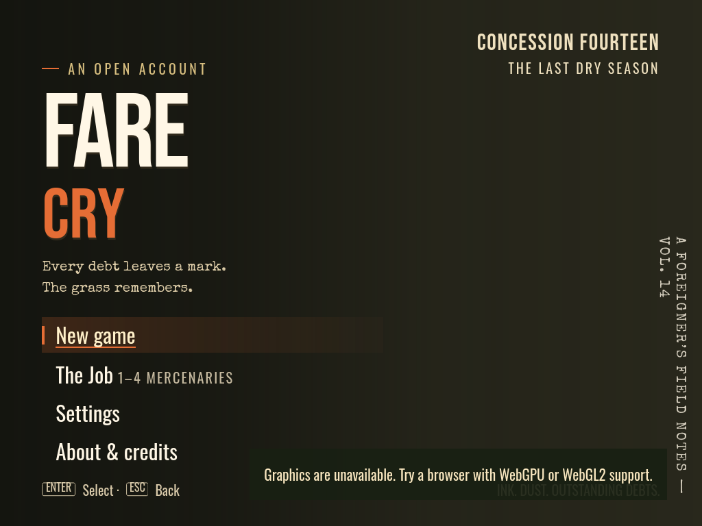
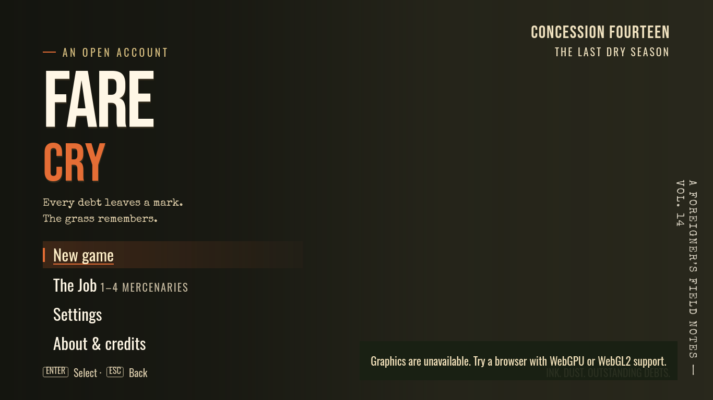
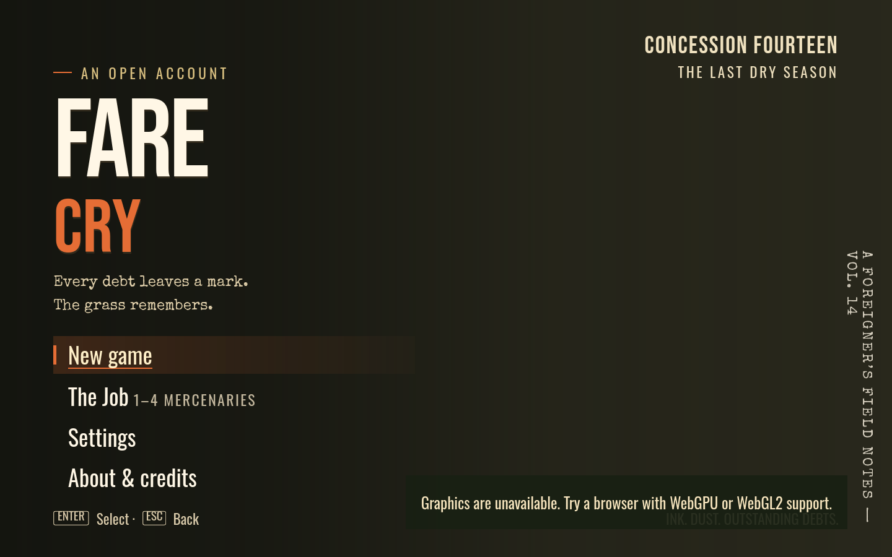
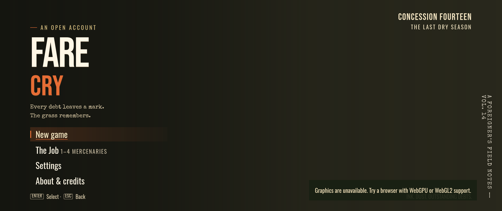

Viewport matrix
file:///home/micha/dev/cc-matrix/runs/gpt-6.1-sol-max.build-v2__20261105-075003__xc21248/work/Fare-Cry-Far-Cry-2-gpt-6.1-sol-max-20261105-075003.html · 2026-11-05 13:16 · thumbnails drawn at 42% of CSS size, so relative sizes are true
desktop

4:3 1024x768
firefox
1024×768 @1x · 1.33:1 landscape
no issues found

Laptop 1366x768
firefox
1366×768 @1x · 1.78:1 landscape
no issues found

16:10 1440x900
firefox
1440×900 @1x · 1.60:1 landscape
no issues found
16:9 1920x1080
firefox
1920×1080 @1x · 1.78:1 landscape
no issues found

21:9 2560x1080
firefox
2560×1080 @1x · 2.37:1 landscape
no issues found